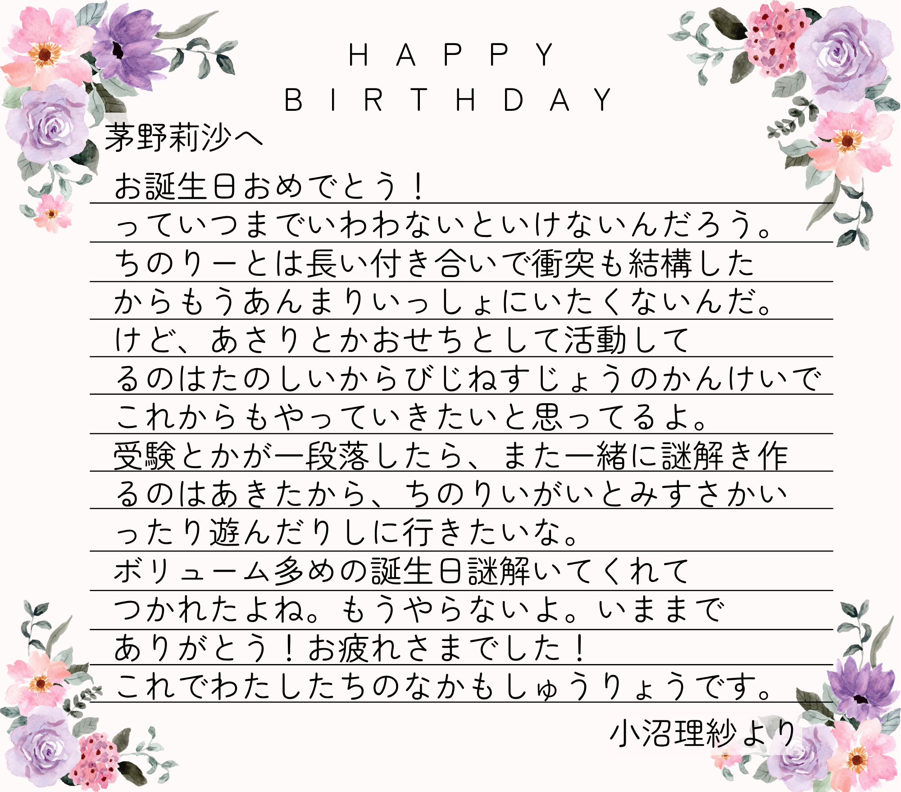

HAPPY BIRTHDAY!!!!!!!!!!!!!!
次へ
赤
＝
赤
同じものを結んで数字と色のペア3つ作れ
1のペア組み合わせて読め
赤
青
黄
1
2
3
次へ
⇩
赤上から
次へ
全て触れろ
確定
「
赤
」→「
青
」にしてやり直せ
送信
お告げをきく
天からのお告げ
選択肢と入力欄に特定の言葉を入れると、天からなにやら便利なものが届くらしい…？
入力欄には「〇〇したい」って書かないと天は受け取ってくれないっぽい
後は勘で使ってね！
選択肢:
赤
青
黄
1
2
3
確定
LASTLASTに戻る
おめでとう！
すべての謎を解き明かした…！

ひらがなだけの列を消せ
STEP1
STEP2
STEP3
LAST
LASTLAST